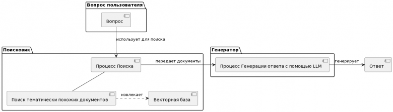

1. Архитектура RAG-системы
Архитектура RAG (Retrieval-Augmented Generation) представляет собой трёхэтапный процесс, объединяющий поиск информации и генерацию текста. Эта архитектура позволяет языковым моделям выходить за рамки своих внутренних знаний, обращаясь к внешним источникам данных в реальном времени. Благодаря такому подходу система может давать актуальные, точные и подкреплённые источниками ответы.

Три основных этапа работы RAG-системы — это индексация, поиск и генерация. На этапе индексации создаётся база знаний, в которой документы разбиваются на фрагменты и преобразуются в векторные представления. На этапе поиска система находит фрагменты, наиболее релевантные запросу пользователя. На этапе генерации языковая модель формулирует ответ на основе найденных фрагментов. Рассмотрим каждый из этих этапов подробнее.
2. Индексация (подготовка базы знаний)
Индексация — это фундаментальный этап, на котором создаётся хранилище информации, к которому RAG-система будет обращаться при ответах на вопросы. Качество индексации напрямую определяет, насколько хорошо система сможет находить релевантную информацию. Исходными данными для индексации служат документы: статьи, инструкции, базы знаний, корпоративные файлы — словом, любые тексты, которые должны быть доступны системе.
Процесс индексации включает три ключевых шага. Первый шаг — разбиение документов на фрагменты, или чанки (chunking). Документы делятся на небольшие смысловые блоки, обычно абзацы или предложения. Это необходимо потому, что поиск по целым документам часто бывает слишком грубым: пользователя интересует конкретный фрагмент информации, а не весь документ целиком. Оптимальный размер чанка зависит от задачи и структуры данных, но обычно составляет от 100 до 500 слов. Слишком маленькие чанки могут терять контекст, а слишком большие — содержать лишнюю информацию, мешающую точному поиску.
Второй шаг — преобразование фрагментов в эмбеддинги (векторные представления). Каждый чанк кодируется с помощью модели-энкодера, такой как Sentence BERT, MPNet или rubert-tiny2 для русского языка. Эмбеддинги — это плотные векторы чисел, которые отражают семантическое значение текста. Важнейшее свойство эмбеддингов заключается в том, что семантически близкие тексты оказываются близкими и в векторном пространстве. Например, фразы «собака бежит» и «пёс мчится» получат очень похожие векторные представления, даже если в них нет ни одного одинакового слова.
Третий шаг — сохранение эмбеддингов в векторной базе данных. Векторные базы данных, такие как Pinecone, Weaviate, FAISS или Chroma, оптимизированы для быстрого поиска ближайших векторов по метрикам сходства. Они позволяют находить релевантные фрагменты среди миллионов записей за миллисекунды, что делает RAG-системы практичными для реального использования.
3. Поиск (retrieval)
Когда пользователь задаёт вопрос, RAG-система переходит к этапу поиска. Первым делом вопрос пользователя преобразуется в эмбеддинг, причём используется та же самая модель-энкодер, которая применялась на этапе индексации. Это критически важно, потому что векторы вопроса и векторы фрагментов должны лежать в одном семантическом пространстве — только тогда их можно корректно сравнивать.
После того как вектор вопроса получен, векторная база данных выполняет поиск ближайших соседей. Чаще всего для сравнения векторов используется косинусная близость (cosine similarity). Косинусное сходство измеряет угол между двумя векторами: если угол равен нулю (векторы сонаправлены), сходство равно 1; если векторы перпендикулярны, сходство равно 0; если противоположно направлены, сходство равно -1. Формула косинусного сходства выглядит следующим образом: similarity = (A·B) / (||A|| × ||B||), где A — вектор вопроса, B — вектор фрагмента, а · обозначает скалярное произведение.
Важно отметить, что качество поиска зависит не только от модели эмбеддингов, но и от способа разбиения документов. Хорошо подобранный размер чанка и пересечение между соседними чанками (overlap) помогают сохранять контекст и повышают полноту поиска.
4. Генерация (generation)
На этапе генерации RAG-система формирует финальный ответ пользователю. Найденные на предыдущем этапе релевантные фрагменты (которые теперь называются контекстом) вместе с исходным вопросом пользователя подаются в языковую модель (LLM). Передача информации осуществляется через специальным образом сконструированный текст — промпт.
Промпт для RAG-системы обычно имеет следующую структуру. Вначале идёт инструкция, которая задаёт поведение модели: «Ответь на вопрос, используя только предоставленный контекст. Если ответа нет в контексте, чётко скажи, что информации недостаточно. Не добавляй выдуманных фактов». Затем вставляется сам контекст — извлечённые фрагменты, часто с указанием их источников. После этого приводится вопрос пользователя. Наконец, модель генерирует ответ, который может также включать ссылки на источники информации.
Языковая модель может быть как локальной (например, Llama 3, Qwen2.5, Mistral), так и доступной через облачное API (GPT-4, Claude). Локальные модели обеспечивают конфиденциальность данных и не требуют оплаты за использование, но уступают более крупным облачным моделям в качестве генерации. Облачные API, напротив, дают высокое качество, но требуют интернет-соединения и оплаты токенов.
Вопрос пользователя: «Каковы основные симптомы гриппа?»
Найденные фрагменты: абзацы из медицинских статей и инструкций по диагностике.
Ответ LLM: «Основные симптомы гриппа включают высокую температуру (обычно выше 38°C), озноб, сильную головную боль, мышечные боли, слабость и утомляемость. В отличие от простуды, грипп характеризуется внезапным началом и более тяжёлым течением. (Источник: Клинические рекомендации Минздрава)»
Преимущество: ответ опирается на авторитетный источник, а не на «общие знания» модели.
5. Сферы применения RAG
RAG стал стандартом для вопросно-ответных систем, особенно в корпоративной среде, где критична актуальность и достоверность информации. Рассмотрим основные сценарии использования этой технологии.
Чат-боты службы поддержки — одно из самых массовых применений RAG. Боты отвечают на вопросы клиентов, опираясь на документацию компании, базы знаний и инструкции. Это позволяет сократить нагрузку на живых операторов, ускорить ответы и обеспечить единообразие информации. При этом RAG-бот может ссылаться на конкретные разделы документации, демонстрируя клиенту, откуда взят ответ.
Корпоративные поисковики на основе RAG обеспечивают семантический поиск по внутренним документам компании — политикам, регламентам, отчётам, технической документации. В отличие от традиционного ключевого поиска, RAG понимает смысл запроса и находит релевантные документы, даже если в них нет точных ключевых слов. Это особенно важно для крупных организаций с огромными массивами данных.
Образовательные ассистенты помогают студентам и преподавателям находить информацию в учебных материалах, научных статьях и методических пособиях. RAG-система может не только отвечать на вопросы по курсу, но и указывать, в каком именно разделе учебника или статьи содержится ответ, что способствует более глубокому изучению материала.
Исследовательские инструменты на основе RAG активно используются юристами, медиками, учёными и аналитиками для работы с большими массивами специализированной литературы. Система позволяет быстро находить релевантные фрагменты в тысячах документов и формулировать ответы на сложные профессиональные вопросы, экономя часы ручного поиска.
Персонализированные рекомендации также выигрывают от применения RAG. Система может не просто предложить товар или контент, но и объяснить причину рекомендации: «Этот товар рекомендован, так как вы покупали аналоги ранее. Отзывы других покупателей (ссылки) подтверждают его качество». Прозрачность повышает доверие пользователей.